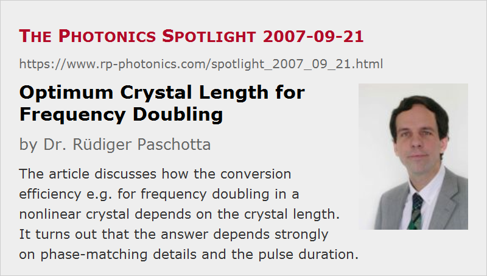

Optimum Crystal Length for Frequency Doubling
Posted on 2007-09-21 as a part of the Photonics Spotlight (available as e-mail newsletter!)
Permanent link: https://www.rp-photonics.com/spotlight_2007_09_21.html
Author: Dr. Rüdiger Paschotta, RP Photonics Consulting GmbH
Abstract: The article discusses how the conversion efficiency e.g. for frequency doubling in a nonlinear crystal depends on the crystal length. It turns out that the answer depends strongly on phase-matching details and the pulse duration.

Ref.: encyclopedia articles on frequency doubling, The Photonics Spotlight 2007-03-05
A frequently encountered question in the context of nonlinear frequency conversion, e.g. frequency doubling, is what is the optimum length of the nonlinear crystal in terms of power conversion efficiency. The answer is as simple as the question: it depends…
Consider a case with noncritical phase matching and a narrow-band continuous-wave pump beam. If one doubles the crystal length and wants to maintain the focusing parameter (i.e., the ratio of crystal length and Rayleigh length), e.g. at the value of optimum focusing, one has to double the mode area in the crystal. (Otherwise, the effect of beam divergence would increase.) Despite the resulting decrease of optical intensity, the conversion efficiency is doubled. So a larger length is good for efficiency, but it also increases the price as well as the sensitivity to local temperature deviations: phase matching has to be maintained over a larger length, and eventually this will become difficult, particularly in a crystal oven. Besides, one may run into limits if the optical bandwidth of the pump source is significant.
By using a nonlinear waveguide, one can of course increase the interaction length without increasing the mode area, so that the conversion efficiency increases with the square of the waveguide length, rather than only linearly. (We always assume that we are in the regime of low conversion, i.e. without pump depletion.)
With critical phase matching, the scaling properties are different. When doubling the crystal length, one should usually double the mode radius so as not to increase the effect of spatial walk-off. This, however, quadruples the mode area (assuming a circular pump beam), and the overall conversion efficiency stays constant. So it doesn't help to us a longer crystal, except perhaps if one needs to operate with lower optical intensities to avoid crystal damage, or if one is prepared to work with cylindrically focused beams.
Still another situation is the nonlinear conversion of ultrashort pulses, where the group velocity mismatch between the different involved waves can be significant. The crystal length is then usually chosen roughly so that the temporal walk-off equals the pulse duration. So if one doubles the pulse duration, one may use a crystal with twice the length. This requires twice the mode area to maintain optimum focusing (assuming a bulk crystal, no waveguide, and noncritical phase matching), and for a given pulse energy the peak power is reduced to one half the original value. Overall, the conversion efficiency stays constant, i.e. independent of pulse duration. This is why the normalized conversion efficiency is sometimes specified in %/nJ (percent per nanojoule).
Still different situations arise for ultrashort pulses and critical phase matching; the dependence on pulse duration has been discussed in The Photonics Spotlight 2007-03-05.
One can see that the answer to such a simple question requires a decent knowledge of the involved physics. And certainly such answers should be provided before starting experiments on nonlinear frequency conversion, or buying nonlinear crystals.
This article is a posting of the Photonics Spotlight, authored by Dr. Rüdiger Paschotta. You may link to this page and cite it, because its location is permanent. See also the RP Photonics Encyclopedia.
Note that you can also receive the articles in the form of a newsletter or with an RSS feed.
Questions and Comments from Users
Here you can submit questions and comments. As far as they get accepted by the author, they will appear above this paragraph together with the author’s answer. The author will decide on acceptance based on certain criteria. Essentially, the issue must be of sufficiently broad interest.
Please do not enter personal data here; we would otherwise delete it soon. (See also our privacy declaration.) If you wish to receive personal feedback or consultancy from the author, please contact him e.g. via e-mail.
By submitting the information, you give your consent to the potential publication of your inputs on our website according to our rules. (If you later retract your consent, we will delete those inputs.) As your inputs are first reviewed by the author, they may be published with some delay.
|  |
If you like this page, please share the link with your friends and colleagues, e.g. via social media: 


These sharing buttons are implemented in a privacy-friendly way! |
2020-04-10
In a high energy nanosecond laser at 532 nm wavelength (frequency-doubled Nd:YAG), the thickness of the frequency doubling crystal is optimized for a certain pulse energy and a certain pulse duration of the infrared (IR) nanosecond pulse. In a new configuration, the IR pulse energy is to be preserved, but the pulse duration is increased for the protection of some optical components. For the new optimized SHG stage, do we have to use a longer or shorter crystal?
Answer from the author:
The increased pulse duration leads to a reduced peak power, which needs to be compensated somehow in order to maintain the nonlinear conversion efficiency. One way would be to use stronger focusing into the crystal, but one would then lose the advantages of lower intensities for reducing the risk of optical damage. Therefore, one may prefer to use a longer crystal. However, the best trade-off may well depend on the particular circumstances.